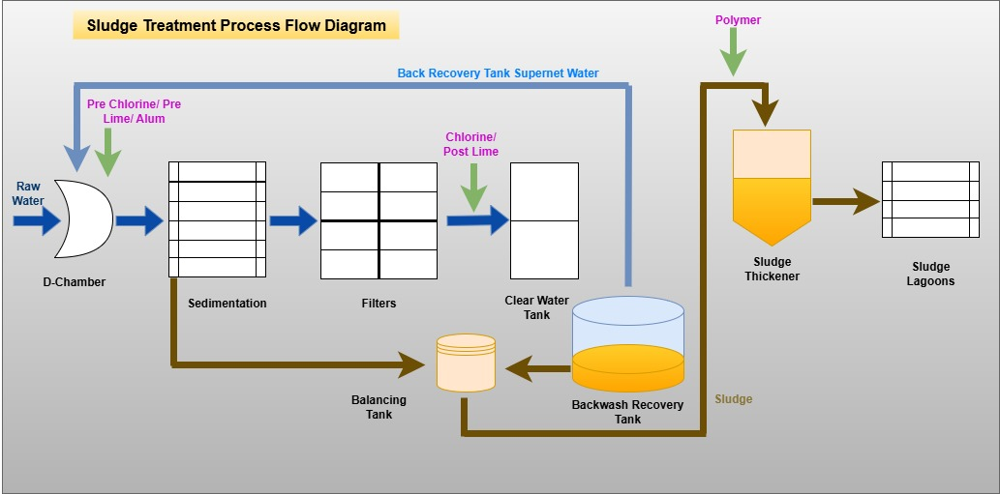
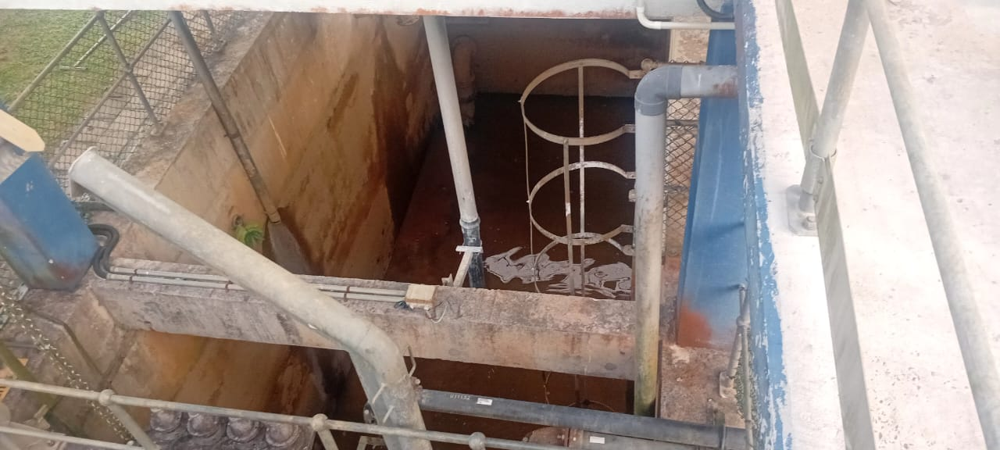
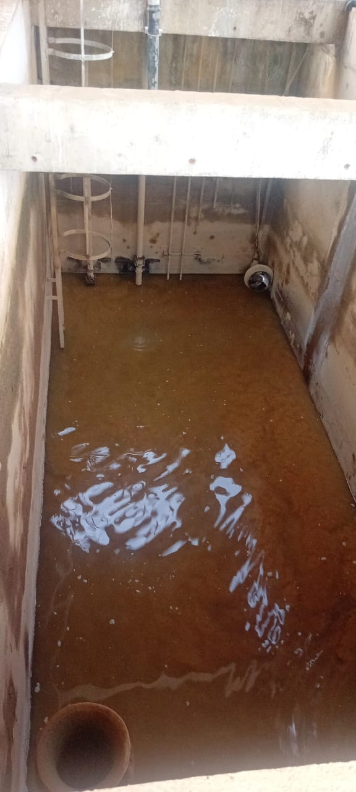
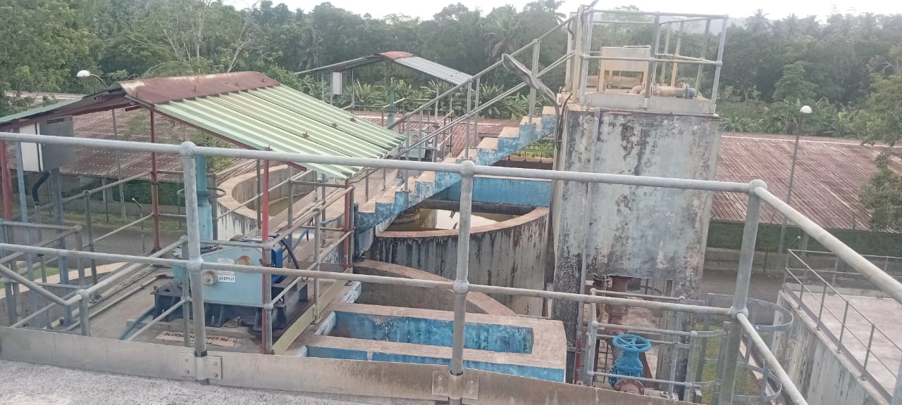
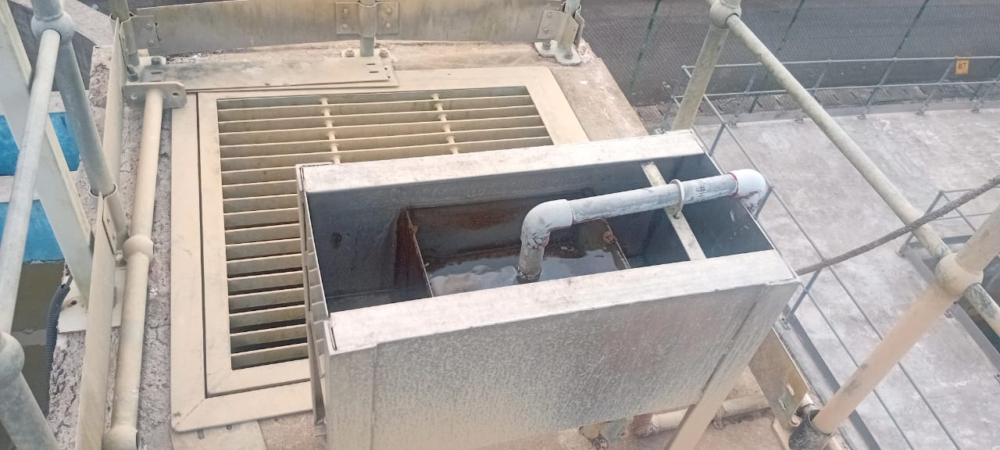
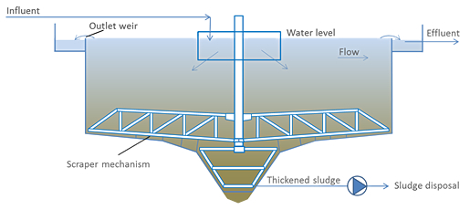
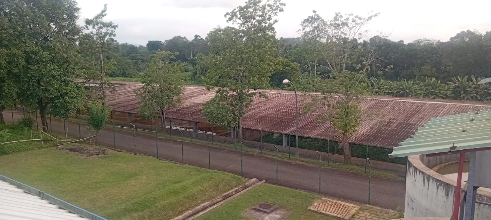
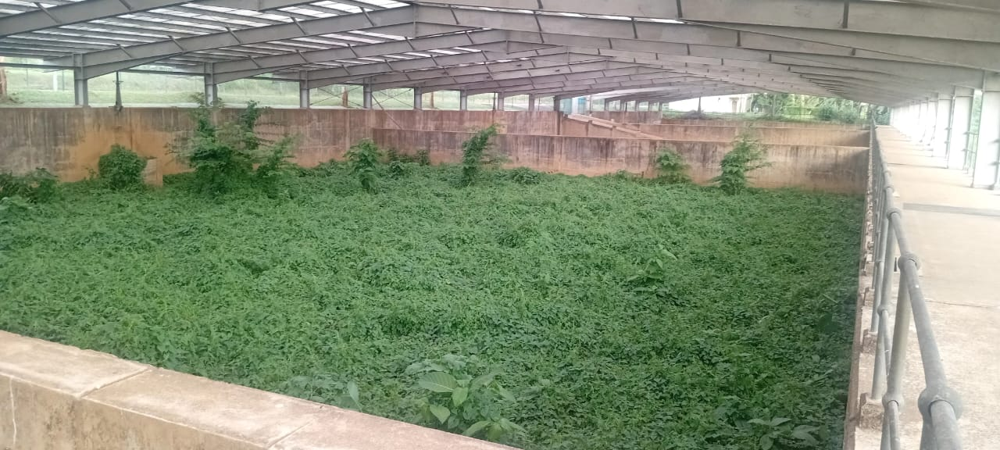
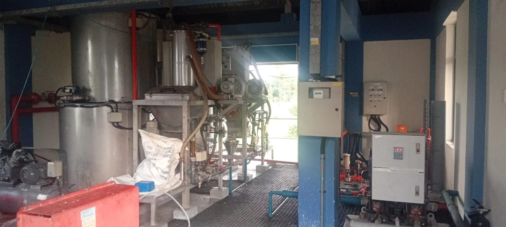
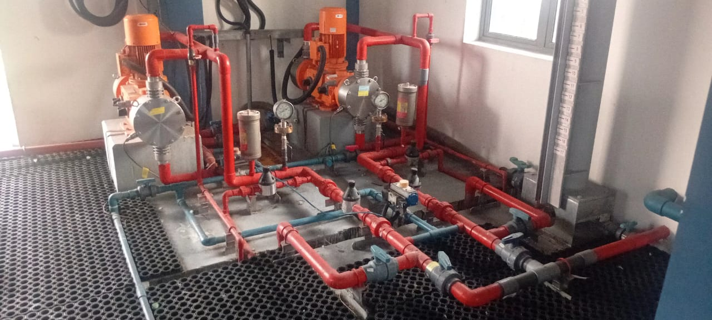

Sludge Treatment Process
Sedimentation ටැංකියෙහි තැම්පත් වන මඩ හා වැලි පෙරණ( sand filter) සේදීමෙන් ඉවත් වන මඩද පරිසරයට හානියක් නොවන ලෙස ඉවත්කල යුතු වෙනවා. මේ සඳහා මෙම මඩ වියලා ඉවත් කිරීම සිදුකරනවා. මෙම ක්රියාවලිය සඳහා පහත අංග කඳන ජලපවිත්රාගාරය තුළ පවතිනවා.
1. Balancing Tank
2. Backwash Recovery Tank
3. Sludge Thickner
4. Sludge Lagoons
5. Polymer Preparation System

1. Sludge Balancing Tank
-
Sedimentation ටැංකියෙන් ඉවත් වන මඩ(Sludge) හා Backwash Recovery ටැංකියේ තැම්පත්වෙන මඩ Balancing Tank වෙත එකතුවේ. මෙසේ Balancing Tank වෙත එකතුවෙන මඩ Sludge Thickner වෙත පොම්ප කිරීම සිදුවේ. ඒ අතර තුරදී මෙම මඩ සමග පොලිමර් සම්මිශ්රණය කිරීම (Mixing) සිදුකරයි.
- Capacity of Recovery Tank 6mDia x 4m tanks(Approx. 113m3 x 2)(2 Nos)
- Capacity of Sludge Lagoons 25 x 30 x 3m (WxLxD)(4 Nos)
- Polymer preparation system 02Nos
- Incidental Facilities Booster pumps - 02Nos
- Dosing pumps - 02Nos


| Capacity of Balancing Tank | 8.8×3.6×3.7m(L × W × H) |
| Capacity of Sludge Pumps | 25.6 l/s @ 17 m head (2 Nos) |
| Capacity of Sludge Mixer | 2.5 kW |
| Capacity of Recovery Tank | 10 x 5 x 7m (LxWxH) x (2 Nos) |
| Capacity of Supernatant pumps | 100 l/s @ 10 m head /18.5 kW (2 Nos) |
| Capacity of Sludge pumps | 30 l/s @ 15m head /18.5 kW (2 Nos) |
3. Sludge Thickner
-
මෙහිදී Sludge Balancing Tank වෙතින් ලැබෙන මඩ ඝනකරණය (Thick) කරයි. ඝන කළ මඩ Sludge Lagoon වෙත ගෙනයයි. පිරිසිදු කළ අපජලය කාණු පද්ධතියක් හරහා ගලා යාමට සලස්වයි.


Structure of Thickner

4. Sludge Lagoons
-
Sludge Thickner එකෙන් පිටකරනු ලැබූ ඝනවූ මඩ Sludge Lagoon වෙත යොමුකරයි. මෙහිදී මෙම මඩ වල ඇති ජලය හිරු රශ්මියෙන් හා සුළග භාවිතයෙන් ඉවත් කරයි. මෙසේ ජලය ඉවත් වී හොදින් වේලී පස් බවට පත්වූ මඩ පරිසර හිතකාමී ලෙස පරිසරයට මුදාහරී(Land Fillings).


5. Polymer Preparation System
-
Balancing Tank එකෙන් පොම්ප කරනු ලබන මඩ වල ඝනත්වය වැඩි කිරීම සඳහා යොදා ගනු ලබන පොලිමර් මිශ්රණය සකස් කර ගැනීම හා ඒවා පොම්ප කිරීම මෙහිදී සිදුකරයි.

